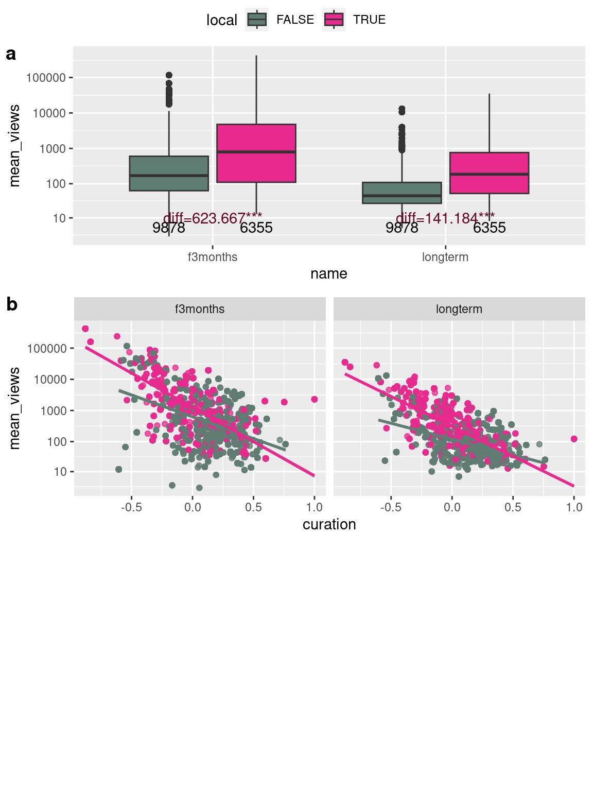
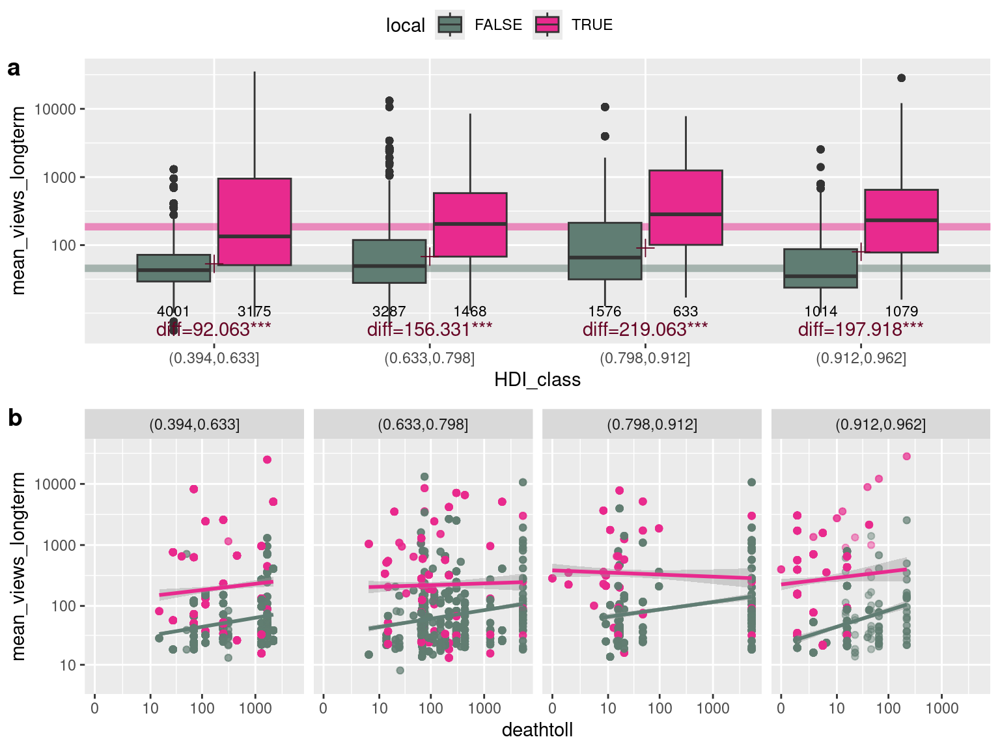

library(glitter)
library(tidyverse)
library(ggpubr)
library(tidytext)
library(leaflet)
library(rainette)
options(scipen = 9999)
col_WD="#e82a8e"
col_WD_medium="#f17fbb"
col_WD_soft="#fad4e8"
col_DFO="#607d73"
col_DFO_WD="#670525"
signif_stars=function(signif){
result=case_when(signif<0.001~"***",
signif<0.01~"**",
signif<0.05~"*",
signif<0.1 ~".",
TRUE~"")
return(result)
}
compare_medians=function(tib,general=FALSE){
if(general==FALSE){
result=tib %>%
dplyr::group_by(x) %>%
dplyr::summarise(mediany=median(vary,na.rm=TRUE)) %>%
dplyr::select(mediany) %>%
dplyr::pull() %>%
diff()
}
if(general==TRUE){
median_other=tib %>% filter(x==FALSE) %>% pull(vary) %>% median(na.rm=TRUE)
median_cat=tib %>% filter(x==TRUE) %>% pull(vary) %>% median(na.rm=TRUE)
result=median_cat-median_other
}
return(result)
}
source("scripts/calc_tib_summary.R")Online reports and narrations of flood events
wd_events=readRDS("data/wd_events.RDS")
wm_full=readRDS("data/wm_full.RDS")
wp_20_words_per_event=readRDS("data/wp_20_words_per_event.RDS")
wm_full=wm_full %>%
left_join(wp_20_words_per_event, by=c("flood"))
dfo_comp=readRDS("data/dfo_comp.RDS")
wm_comp=readRDS("data/wm_comp.RDS")
wm_dfo=readRDS("data/wm_dfo.RDS")
wm_dfo_corr=readRDS("data/wm_dfo_corr.RDS")Aim of the article
This study’s objectives are to
- collect and assess the information provided by the Wikimedia initiative (Wikidata, Wikipedia, Wikimedia Commons) on flood events.
- compare this data, which is crowdsourced, to an institutionnally curated database on the same topic.
- use this data to characterize and understand (in terms of human impact especially) the flood events documented.
Introduction
Producing a global flood event dataset poses numerous challenges due to the complex nature of data semantics, collection, standardization, and accessibility. A primary obstacle is the lack of uniform reporting standards leading to inconsistencies in definitions of flood events and in data collection methods. Varying technological capabilities (material access and practice’s acculturation) across geographical regions of the world also contribute to disparities in data availability. Disasters like floods might occur in areas where communication and infrastructure are limited, and/or not used for real-time data collection. Political, social, and economic factors also play a role, as some regions may under-report or document flood occurrences differently, due to reasons such as insufficient resources and infrastructures, lack of governmental transparency, or competing priorities [add ref]. Additionally, there are inequalities in the geographies of data production that reflect and reproduce global economic core-peripheries [@graham_inequitable_2014; @graham_towards_2015; @haklay_why_2016]. [Ash et al. ref] refers to some “informational magnetism” resulting in the over-representation of the global North (the “core”). As a result, and despite advancements in satellite technology and remote sensing, ensuring comprehensive, accurate, and up-to-date global flood data remains a persistent challenge that requires better data curation; global efforts to improve information-sharing mechanisms; and the development of a critical eye on the reasons for data production, on the geographical contexts in which it has been produced, and on its uses.
Participatory data collection can significantly enhance the understanding and management of flood events. This approach involves engaging local communities, citizens, and grassroots organizations in the collection, analysis, and sharing of data related to flood occurrences. Examples of such initiatives show the potential of participatory data to complement institutional data about floods at a local scale [@dixon_role_2021; @sekajugo_can_2022]. By incorporating local knowledge, experiences, and observations, participatory methods complement traditional data sources, offering valuable insights into flood-prone areas that might be overlooked by centralized or remote monitoring systems, controlled by certain systems in power (Nation-states, heterogeneous coalition of technologically savvy individuals, private technology companies). More broadly, volunteered geographical data at a local scale has been shown to be a valuable source of data regarding hazards [@herfort_evolution_2021].
Communities living in flood-prone regions possess unique, context-specific, even vernacular knowledge about local environmental changes, historical flood memory, vulnerable areas, and coping mechanisms. Engaging these communities in data collection through citizen science initiatives, mobile applications, community mapping, or participatory workshops allows for the collection of granular, real-time information that supplements existing datasets. Ideally, this bottom-up approach not only enhances the accuracy and granularity of flood data, but also fosters community empowerment in terms of resilience, by engaging all communities to participate, including those excluded from decision-making or digital access.
Moreover, participatory data can bridge gaps in official reporting by capturing small-scale or localized flood events that are not publicized and thus recognized by institutions. Integrating participatory data with conventional datasets enables a more comprehensive understanding of flood dynamics, aiding in the development of anticipation policies effective early warning systems, and disaster response plans.
However, challenges such as ensuring data accuracy, reliability, and standardization persist in participatory approaches. While establishing protocols for data validation and quality control between participatory and formal datasets is important to maximize the potential of participatory data and to maintain data integrity [@senaratne_review_2017], the participatory data can be standardized. In other words, the subtelties perceived by local communities can be smoothed out (i) in interfaces designed by situated engineers and (ii) in data collection via protocols designed by situated scientists. However, the stakes around data validation and homogenization are particularly high in the prospect of studying floods at a global scale.
Overall, leveraging participatory data in conjunction with conventional methods can enrich global flood databases, improve resilience, and empower communities to better respond to and mitigate the impacts of flood events. This collaborative approach can contribute significantly to more holistic and inclusive strategies for managing floods worldwide, to question (i) the data (how, by whom and for what purpose they are collected) and (ii) the collection process (highlighting ethnocentric biases by comparison).
The Dartmouth Flood Observatory (DFO) is a research group specializing in the collection and analysis of global flood data. Combining remote sensing and news reports’ analysis, the DFO produces detailed information on the extent, frequency, and impacts of floods worldwide [@kundzewicz_large_2013]. It constitutes an invaluable source of information on the subject, used in many scientific studies on flood events [@winsemius_framework_2013; @hu_flood-induced_2018; @najibi_recent_2018; @tellman_satellite_2021].
In parallel to that kind of research-related, expert database on the subject, the Wikimedia project stands as a remarkable source of structured or semi-structured participatory data with its vast array of user-generated content across platforms like Wikipedia, Wikidata, and Wikimedia Commons. Wikipedia, as one of the largest collaborative encyclopedias, and one of the most used and visited websites globally [@graham_towards_2015; @ballatore_digital_2017] harnesses the collective knowledge of volunteers worldwide who contribute, edit, and curate articles on diverse subjects, including geographical features, history, and environmental events such as floods. It can be viewed both as a source of breaking news and as an encyclopedia, providing information and narrative regarding ongoing and past events, in particular crises and controversies [@moats_following_2019]. Wikidata, an open database, provides structured data that can be used to categorize and link information, potentially cataloging flood events, affected regions, and relevant details. Wikimedia Commons serves as a repository for multimedia files, housing images, maps, and other visual resources related to floods, contributing to a more comprehensive understanding of such events. The open nature of Wikimedia projects allows for continual updates and contributions, making it a valuable resource for researchers, policymakers, and the public seeking information on various topics, including flood events, across the globe. The Wikimedia projects are an example of user-generated content on web 2.0 [@mandiberg_4_2020]. Moreover, flood events are generally associated with a location or toponymic information: as such, the produced data can also be included in what @goodchild_citizens_2007 calls “volunteered geographic information” (VGI).
Wikipedia articles have been studied in the context of managing crises due to its accessibility, comprehensiveness, and real-time updates, either focusing on content creation or consultation. This has been the case for e.g. epidemiologic crises [@van_velsen_should_2012; @colavizza_covid-19_2020], natural disasters, technological accidents and violent conflict [@keegan_hot_2013]. During flood events, people might seek immediate information regarding safety measures, evacuation procedures, flood-prone areas, and emergency contacts. Wikipedia’s open editing structure allows for rapid dissemination of accurate information, enabling users to access critical details swiftly. Moreover, the collaborative nature of Wikipedia ensures that a vast array of perspectives and expertise contribute to its articles, resulting in comprehensive coverage of flood-related topics, including flood mitigation strategies, historical flood data, and relevant government responses. This breadth of information empowers individuals, communities, and organizations to make informed decisions and take effective action in response to floods, ultimately aiding in crisis management and mitigation efforts. Additionally, Wikipedia’s multilingual support ensures that its resources are accessible to a global audience, facilitating disaster response efforts in diverse regions affected by floods.
Like many volunteered mapping platforms, the Wikimedia projects are receiving growing interest from the research community [@farda-sarbas_wikidata_2019]. As such, they are used in various projects: on the one hand, the content is employed directly as a data source, e.g. in history, literacy studies, archeology, philosophy [@zhao_systematic_2023], linguistics [@turki_using_2017], medical and biological sciences [@farda-sarbas_wikidata_2019; @burgstaller-muehlbacher_wikidata_2016], etc. or as an indicator of public interest [@mittermeier_using_2021]. On the other hand, studies consider the Wikimedia projects as a research object, e.g. analyzing the contributors’ motivations [@antin_my_2011], comparing their data to traditional databases [@lorini_uneven_2020], evaluating completeness [@royal_whats_2009], accuracy [@giles_internet_2005], topic coverage [@halavais_analysis_2008], local [@ballatore_digital_2017; @ballatore_angeles_2020] and global distribution [@graham_towards_2015; @kollektiv_orangotango_uneven_2018], analyzing knowledge construction [@oeberst_knowledge_2014] and social network dynamics [@iba_analyzing_2010], etc. However, using a worldwide, crowdsourced, open database implies characterizing its contributors. Firstly, studies show that UGC is unequally distributed on a global scale: it is generally skewed towards countries from the Global North, whether it be in terms of participation, representation or access [@kollektiv_orangotango_uneven_2018; @graham_towards_2015; @ballatore_digital_2017]. Research conducted on Wikipedia suggests that the platform follows the same pattern. For example, @graham_inequitable_2014 shows that Europe and North America get the greatest number of articles per person. Secondly, participation tends to be skewed towards “a more wealthy, more educated, more Western, more white and more male demographic” [@crampton_beyond_2013, p.132]. For example, research on OpenStreetMap – an open and crowdsourced mapping platform – suggests that it reproduces the socio-economical structures [@bittner_diversity_2017]. The risk is that these crowdsourced platforms reproduce the inequalities, leaving economically and socially deprived areas also digitally deprived [@jokar_arsanjani_impact_2015]. There is also a strong gender asymmetry on the web, contributing to biased data [@stephens_gender_2013; @gardner_quantifying_2020].
Identifying the data distribution is capital for interpretation and analysis, given that the Wikimedia projects are a part of UGC and are therefore subjects to its biases. The question “who produces the data?” must then be addressed. @lorini_uneven_2020 studied the report of floods on Wikipedia. However, to our knowledge, no study using multiple Wikimedia projects and analyzing the data distribution and production in time as well as in space, using quantitative and textometric methods, has been conducted on this subject.
Methods
Primary census of flood events
We collected Wikidata about floods, using the glitter R package (an API-client to the Wikidata SPARQL endpoint API) [@vaudor_glitter_2023]. Wikidata is a free and collaborative knowledge base, structured as a graph of interconnected items representing physical entities, events, concepts or topics, associated to a unique identifier. These items are linked through properties forming statements describing the relationships between items and/or attributes. Each query we run on Wikidata can hence be viewed as a graph query, where we retrieve items and attributes and the relationships between them.

We carried out a first Wikidata query (Figure 1 .a) to get all instances of floods or subclasses of floods as well as a few descriptors of these. The events can be located through coords (geographical coordinates) loc (a location -which can be any type of geographical item documented in Wikidata, e.g. a city, region or country- which in turn might provide coordinates-), or simply through the country variable -which might also in turn provide coordinates-). We used all these variables to try and provide coordinates for as many events as possible, with the greatest precision possible: we prioritized coords (when available) over coordinates corresponding to location, and coordinates corresponding to location (when available) to coordinates corresponding to country.
We carried out a second Wikidata query (Figure 1 .b) for each flood listed by this first query, to gather information about its time of occurrence (wdt:P585), start time (wdt:P580) and end time (wdt:P582). We hence tried to provide a date for each of the events using either one of these informations, prioritizing the date provided by time of occurrence (if available) over the average date between start time and end time (if both were available), average date between start time and end time over start time or end time (if only one was available), and start time or end time over four-digit words in the events’ label if present (as labels generally consist of a mention of type of event, time and place). Time-related information on Wikidata are specified with varying precision, which when regarding floods generally vary between dayly precision and yearly precision.
We carried out a third Wikidata query (Figure 1 .c) for each country listed by the first query, to gather information about their coordinates, the languages used by their population (either official or used languages), and Human Development Index (HDI).
Comparison to the Dartmouth Flood Observatory data
We wanted to confront the data about floods documented through Wikidata (WD) to the data gathered by the Dartmouth Flood Observatory (DFO) [@brakenridge_global_nodate]. We downloaded the DFO dataset and curated it to make it more easily comparable to our WD dataset, especially regarding country labels. We then tried to match each event in WD to one event in DFO through the following algorithm
For each WD event flood:
- calculate the difference in time between DFO events and
flood - calculate the distance between DFO events and
flood - check for all DFO events whether the difference in time to
floodis less than 400 days and the distance tofloodis less than 400 kms (condition 1) - check for all DFO events whether the difference in time to
floodis less than 400 days and the countries of occurrence are the same than one of the countries registered forflood(condition 2) - filter all DFO events to only keep those verifying condition 1 or condition 2
- if several DFO events verify those conditions, retain only the one corresponding to lowest difference in time to
flood, and consider that this is the DFO event that matchesflood
The rather high threshold of 400 days has been chosen to account both for the possibly low precision -sometimes, yearly precision- in dates, and the fact that flood events can be quite long, leading to heterogeneities in the way the date of occurrence is defined and recorded. The also rather high threshold of 400 kms has been chosen to account for the fact that Wikidata events are not always precisely located. The flood event might indeed be located through a location corresponding to the region centroid, or even country centroid. Using as an alternative to the distance the country of occurrence recorded in both datasets aimed at alleviating this problem of events located with very low spatial precision.
Statistical analysis
We ran all statistical analyses and produced graphics with the R software [@R_base]. When comparing distributions through categories (associating this comparison with boxplots) we tested the difference of each category’s median with the other categories’ median using the Wilcoxon test, a non-parametric test based on ranks, in order not to rely on a normal distribution hypothesis or on asymptotic conditions. When we had more than two categories to compare we compared one category to all other categories, pooling them. We generally considered models with two levels, the response depending on two categorical variables X_1 and X_2. We tested the significance of the difference in median of each level of X_1 against all other levels of X_1, and for each level of X_1, the difference in median of each level of X_2 against all other levels of X_2. We displayed on the graphics the difference in median for each group associated with a code for the p-value: .:p<0.1, *:p<0.05, **:p<0.01, ***:p<0.001.
Text analysis of Wikipedia pages
We scraped the text (all the textual content in headers from level one (h1) to level 6 (h6) as well as paragraphs) from all listed Wikipedia pages, using the rvest R package [@wickham_rvest_2024]. We then translated them to English (if necessary) through Google Translate using the polyglotr R package [@iwan_polyglotr_2024].
We tokenized the texts with the tidytext R package [@silge_tidytext_2016], lemmatized words and filtered out stop words based on the Iramuteq English dictionnary [@ratinaud_iramuteq_2009]. We could then identify textual specificities based on various partitions of the corpus [@lafon_pierre_sur_1980; @loiseau_textometry_2022].
We used Reinert’s method [@reinert_alceste_1990] to classify segments of our corpus (consisting in successive parts of the Wikipedia articles, segmented in such a way that each contains 10 lemmatized, content words). To implement that method, we used the rainette package [@barnier_rainette_2023] and used its exploration tools to choose a meaningful and tractable number of classes. Each class is characterized as a collection of over-represented words, and we used them to label each class in a one-worded, synthetic way. We then used these labelled classes to examine the relationship between the flood characteristics and the topic contents of articles.
Results
Online app
The results and tables can be consulted here:
The app provides maps and plots regarding all events (i.e. at the global scale) but also displays, for each event in the database, all the raw data included in the analyses.
Datasets
Je ne suis pas sûre qu’il faille inclure cette partie dans l’article, mais en même temps je trouve qu’il faudrait réussir à correctement valoriser les données elles-mêmes car ce n’était pas une mince affaire de les rassembler…
We have gathered and curated tables of data from both Wikidata and Wikipedia :
- wd_event: one row = one flood event
- wp_pages: one row = one Wikipedia page
- wp_revisions : one row = one revision of a Wikipedia page
- wp_views: one row = one day of views of a Wikipedia page. This data is provided by one of Wikipedia’s API only dating from the first of July 2015.
- wp_segments: one row = one segment of a Wikipedia page
- countries: one row = one country * one language
For each of these tables, we show below the descriptors names, display which among these correspond to a key useable for joining to other tables, the type of data (numeric, character, logical, etc.) and the contents of one row randomly selected.
wd_events
wd_events=readRDS("data/wd_events.RDS")
knitr::kable(show_table(wd_events,provide_key="flood"))| var | key | class | n_distinct | example |
|---|---|---|---|---|
| flood | * | character | 792 | wd:Q15833333 |
| flood_label | character | 698 | The Magdalen flood of 1480 | |
| date | Date | 615 | 1480-06-22 | |
| country | character | 154 | NA | |
| country_label | character | 154 | NA | |
| deathtoll | numeric | 120 | NA | |
| year | numeric | 236 | 1480 |
wp_pages
wp_pages=readRDS("data/wp_pages.RDS")
knitr::kable(show_table(wp_pages,provide_key=c("article")))| var | key | class | n_distinct | example |
|---|---|---|---|---|
| flood | character | 727 | wd:Q524797 | |
| article | * | character | 2630 | https://uk.wikipedia.org/wiki/%D0%9F%D0%BE%D0%B2%D1%96%D0%B4%D1%8C_%D0%A1%D0%B2%D1%8F%D1%82%D0%BE%D1%97_%D0%84%D0%BB%D0%B8%D0%B7%D0%B0%D0%B2%D0%B5%D1%82%D0%B8_(1421) |
| lang | character | 122 | uk | |
| title | character | 2544 | Повідь Святої Єлизавети (1421) | |
| translated_title | character | 2067 | Leash of Saint Elizabeth (1421) | |
| text | character | 2614 | Повідь Святої Єлизавети (нід. Sint-Elisabethsvloed, 18 листопада — 19 листопада 1421 року; також Дру… [truncated] | |
| textt | character | 2447 | St. Elizabeth’s Leash (n. Sint-Elisabethsvloed, 18 November – 19 November 1421; also Second St. Eliz… [truncated] | |
| length | numeric | 1999 | 1483 | |
| local | logical | 2 | FALSE |
wp_revisions
wp_revisions=readRDS("data/wp_revisions.RDS")
knitr::kable(show_table(wp_revisions,provide_key="article"))| var | key | class | n_distinct | example |
|---|---|---|---|---|
| article | * | character | 2790 | https://eu.wikipedia.org/wiki/2010eko_Pakistango_uholdeak |
| id | integer | 195484 | 1688053 | |
| timestamp | character | 192838 | 2010-09-03T06:02:23Z | |
| minor | logical | 3 | TRUE | |
| size | integer | 61689 | 3619 | |
| comment | character | 94509 | robota Erantsia: [[fa:سیل پاکستان (۲۰۱۰)]] | |
| delta | integer | 7182 | 40 | |
| user_id | integer | 25752 | 15795 | |
| user_name | character | 44109 | EmausBot |
wp_views
wp_views=readRDS("data/wp_views.RDS")
knitr::kable(show_table(wp_views,provide_key="article"))| var | key | class | n_distinct | example |
|---|---|---|---|---|
| article | * | character | 2630 | https://th.wikipedia.org/wiki/%E0%B8%AD%E0%B8%B8%E0%B8%97%E0%B8%81%E0%B8%A0%E0%B8%B1%E0%B8%A2%E0%B9%83%E0%B8%99%E0%B8%A3%E0%B8%B1%E0%B8%90%E0%B9%80%E0%B8%81%E0%B8%A3%E0%B8%A5%E0%B8%B0_%E0%B8%9E.%E0%B8%A8._2561 |
| title | character | 2544 | อุทกภัยในรัฐเกรละ พ.ศ. 2561 | |
| lang | character | 122 | th | |
| timestamp | character | 3138 | 2022070100 | |
| views | integer | 3939 | 3 |
wp_segments
wp_segments=readRDS("data/wp_segments.RDS")
knitr::kable(show_table(wp_segments,provide_key="article"))| var | key | class | n_distinct | example |
|---|---|---|---|---|
| article | * | character | 2630 | https://de.wikipedia.org/wiki/Februarflut_1825 |
| text_all | character | 64198 | dike on the ostland which was not yet connected to the western part of the island broke so that the entire agricultural area there was flooded on juist there were also large dune | |
| text_sig | character | 64147 | dike connect western part island break entire area large dune | |
| class | factor | 7 | class_4 | |
| class_name | factor | 7 | hydrology | |
| color | character | 7 | #76B7B2 |
countries
countries=readRDS("data/countries.RDS")
knitr::kable(show_table(countries, provide_key=c("country","country_label")))| var | key | class | n_distinct | example |
|---|---|---|---|---|
| country | * | character | 110 | wd:Q29 |
| country_label | * | character | 110 | Spain |
| coords_country | character | 110 | Point(-3.5 40.2) | |
| HDI | numeric | 101 | 0.905 | |
| lang_type | character | 2 | used | |
| language | character | 442 | Basque | |
| language_code | character | 441 | eu |
Wikidata on floods
The initial query provided 1048 Wikidata flood events. In terms of spatial precision, most coordinates are inferred from either variable country or variable location (the major part of provided locations being countries too). The date of most events is documented either directly or through the label of the event. Most events’ dates are provided with day precision but an important proportion (about one third) is provided with only annual precision.
readRDS("data/precision_coords.RDS") %>%
knitr::kable()| coords_from | is_country | n |
|---|---|---|
| 1) direct | 11 | |
| 2) location | no | 189 |
| 2) location | yes | 495 |
| 3) country | 17 | |
| 4) no coordinates | 86 |
readRDS("data/dates_precision.RDS") %>%
group_by(date_from,date_precision) %>%
tally() %>%
knitr::kable()| date_from | date_precision | n |
|---|---|---|
| av_start_end | day | 145 |
| direct | day | 224 |
| direct | month | 122 |
| direct | year | 107 |
| flood_label | year | 138 |
| start | day | 45 |
| NA | NA | 31 |
Compare to DFO data
We could expect the WD dataset to include less events than the DFO dataset which records flood events primarily based on physical criteria, while one can argue that events are only recorded in WD when they reach some level of social or historical significance. We also expected the WD dataset to be somewhat biased towards events in countries with a higher HDI, as crowdsourced web datasets are known to be. We hence compared the number of events in both datasets according to the HDI class of the country where the event took place.
source("scripts/comp_dfo_wd.R")
wm_dfo_comparison=readRDS("data/wm_dfo_comparison.RDS") %>%
mutate(total_length=ceiling(total_length/1000))We compare the number of events in both datasets (WD and DFO) according to the Human Development Index of the country where the event took place.
p1=ggplot(wm_dfo_comparison,
aes(x=HDI_class,fill=in_data))+
geom_bar(position=position_dodge())+
scale_fill_manual(values=c("dfo"=col_DFO,
"in_both"=col_DFO_WD,
"wd"=col_WD))+
scale_y_continuous(breaks=c(0,500,1000,1500),
labels=c("0"," 500"," 1000"," 1500"))+
ylab("number of events")
wm_dfo_comparison=wm_dfo_comparison %>%
mutate(deathtoll=case_when(is.na(deathtoll)~deathtoll_dfo,
!is.na(deathtoll)~deathtoll)) %>%
mutate(HDI_class=case_when(is.na(HDI_class)~"unknown",
TRUE~HDI_class))
wm_dfo_comparison_summary=wm_dfo_comparison %>%
group_by(HDI_class,in_data) %>%
tally()
tib_effect=calc_tib_summary(tib=wm_dfo_comparison,
group1=HDI_class,
group2=in_data,
y=deathtoll,
round=10,
d1name=NULL,
d2name=NULL)`summarise()` has grouped output by 'group1'. You can override using the
`.groups` argument.p2=ggplot(wm_dfo_comparison,
aes(x=HDI_class,y=deathtoll))+
geom_hline(data=tib_effect %>% select(no_group1) %>% unique,
aes(yintercept=no_group1),
alpha=0.5,col=col_DFO_WD, linewidth=2)+
geom_boxplot(aes(fill=in_data))+
geom_text(data=tib_effect %>% select(group1,n) %>% unique(),
aes(x=group1,y=-0.5,label=n),
position=position_dodge(width=0.8),
size=3)+
geom_text(data=tib_effect %>%
select(contains("group1")) %>% unique(),
aes(x=group1,y=30000,label=label_group1),
size=4,col=col_DFO_WD)+
geom_text(data=tib_effect %>%
select(group1,contains("group2")) %>% unique(),
aes(x=group1,group=group2,
y=rep(exp(c(12.2,12.7,13.2)-1),5),
label=label_group2),
size=3,
position=position_dodge(width=0.8))+
geom_text(data=tib_effect %>%
select(group1,group2,n) %>% unique(),
aes(x=group1,group=group2,
y=0.5,
label=n),
size=3,
position=position_dodge(width=0.8))+
scale_y_continuous(trans="log1p",
limits=c(0,1000000),
breaks=c(0,10,100,1000,10000,100000))+
scale_fill_manual(values=c("dfo"=col_DFO,
"in_both"=col_DFO_WD,
"wd"=col_WD))
ggpubr::ggarrange(p1,p2,nrow=2,ncol=1,common.legend=TRUE)Warning: Removed 472 rows containing non-finite values (`stat_boxplot()`).Warning: Removed 15 rows containing missing values (`geom_text()`).
Figure 2 a) Number of flood events documented in Wikidata (wd), DFO (dfo) or both datasets according to our matching algorithm. The number of events is displayed according to the Human Development Index (HDI) class of the country where the event took place (countries are pooled in the first, second, third or fourth quartile). b) Deathtoll per event according to HDI class and occurrence in one or both datasets. The estimate considered for deathtoll comes either from the DFO dataset, or by default from the Wikidata dataset (some events are not associated to any deathtoll estimate, in which case they are excluded from this figure). Some events happened in places where the country name changed through time making it difficult to link them to a HDI value: these are the ones represented by an unknown HDI class.
Figure 2 .a confirms that compared to DFO, the proportion of events in Wikidata corresponding to countries with higher HDI is important. On the other hand, the distribution of events in the DFO dataset through HDI categories is also quite heterogeneous, with countries in the first and especially second quartile for HDI representing most events. An unbiased distribution of events (when defined through purely physical criteria) should reflect the total area of countries in the four quartiles for HDI, if there were no distinction between them in terms of distribution of more-or-less flood-prone biomes, which we know is not the case). Moreover, even if events are primarily detected based on physical criteria, the DFO dataset still incorporates societal elements (regarding damage and deathtoll for instance) to account for the actual importance or significance of the event. This highlights the systematic difficulty of defining, detecting and reporting flood events in an unbiased, homogeneous way across projects.
Figure 2 .b shows that compared to DFO-documented events, events included in the WD dataset are generally associated with higher deathtoll. For DFO-documented events, the lower the HDI class, the higher the deathtoll, which could be explained by impoverished countries having less resources and infrastructure to mitigate and respond to such disasters effectively, as well as more inadequate housing and settlement in vulnerable areas exacerbating the impact of floods on communities. As for WD-documented events, the few ones which occurred in lowest HDI countries also correspond to (very) high deathtolls indeed, but so do the ones which have occurred in the richest countries and even more so the ones for which we do not have a value for HDI. In this last case, the events documented in Wikidata only are often historical ones like the 1931 China floods (wd:Q1150973). These floods occurred in the Republic of China (1912-1949), for which we failed to obtain an HDI value, and which were associated with very high and somewhat discussed deathtolls. This highlights the fact that the WD dataset is biased towards events with high societal impact, which is not surprising given the nature of the project.
For some events we were able to find a match between the WD dataset and the DFO dataset, so that we could compare the deathtoll paired observations.
deathtoll_compar=wm_dfo_comparison %>%
# define source of deathtoll
mutate(deathtoll_wd=deathtoll)%>%
# define for which floods we have paired observations
mutate(paired_observations=in_data=="in_both") %>%
mutate(paired_observations=case_when(paired_observations~"paired",
TRUE~"unpaired")) %>%
tidyr::pivot_longer(c(deathtoll_wd,deathtoll_dfo),
names_to="dataset",
names_prefix="deathtoll_")
deathtoll_compar_summary=deathtoll_compar %>%
group_by(paired_observations) %>%
summarise(value=median(value,na.rm=TRUE))
tib_effect=calc_tib_summary(deathtoll_compar,
group1=paired_observations,
group2=dataset,
y=value,
round=10,
d1name=NULL,d2name=NULL)`summarise()` has grouped output by 'group1'. You can override using the
`.groups` argument.p1=ggplot(deathtoll_compar,
aes(x=paired_observations, y=value))+
geom_hline(data=tib_effect %>% select(no_group1) %>% unique,
aes(yintercept=no_group1),
alpha=0.5,col=col_DFO_WD, linewidth=2)+
geom_boxplot(aes(fill=dataset))+
geom_text(data=tib_effect %>%
select(contains("group1")) %>% unique(),
aes(x=group1,y=1000000,label=label_group1),
size=4,col=col_DFO_WD)+
geom_text(data=tib_effect %>%
select(group1,contains("group2")) %>% unique(),
aes(x=group1,group=group2,
y=400000,
label=label_group2),
size=3,
position=position_dodge(width=0.8))+
geom_text(data=tib_effect %>%
select(group1,group2,n) %>% unique(),
aes(x=group1,group=group2,
y=-0.5,
label=n),
size=3,
position=position_dodge(width=0.8))+
scale_y_continuous(trans="log1p",
breaks=c(0,10,100,1000,10000,100000))+
scale_fill_manual(values=c("dfo"=col_DFO,
"wd"=col_WD))+
scale_color_manual(values=c("paired"=col_DFO_WD,
"unpaired"="black"))
p2=ggplot(wm_dfo_comparison %>%
mutate(deathtoll_wd=deathtoll) %>%
mutate(sourced=!is.na(deathtoll_source)),
aes(x=deathtoll_wd,
y =deathtoll_dfo))+
geom_point(col=col_DFO_WD,size=2, alpha=0.25)+
scale_x_continuous(trans="log1p",
breaks=c(0,10,100,1000,10000,100000))+
scale_y_continuous(trans="log1p",
breaks=c(0,10,100,1000))+
geom_abline(intercept=0,slope=1, linetype=2,col="black")+
geom_rug(col="grey")
cor=cor(log(wm_dfo_comparison$deathtoll+1),log(wm_dfo_comparison$deathtoll_dfo+1),use="complete.obs")
deathtolls_estimates=wm_dfo_comparison %>%
mutate(ldeathtoll=round(log(deathtoll+1)),ldeathtoll_dfo=round(log(deathtoll_dfo+1))) %>%
mutate(diff_om=ldeathtoll-ldeathtoll_dfo,diff=deathtoll-deathtoll_dfo)
tib=deathtolls_estimates %>%
mutate(same_deathtoll=diff==0,
same_deathtoll_om=diff_om==0)
tib_same=tib %>%
group_by(same_deathtoll,in_data) %>%
tally()
tib_same_om=tib %>%
group_by(same_deathtoll_om,in_data) %>%
tally()
n_same=tib_same %>% filter(same_deathtoll==TRUE,in_data=="in_both") %>% pull(n)
n_same_om=tib_same_om %>% filter(same_deathtoll_om==TRUE,in_data=="in_both") %>% pull(n)
n_tot=tib %>% filter(in_data=="in_both") %>% tally() %>% pull(n)
ggpubr::ggarrange(p1,p2,nrow=2,ncol=1, labels=c("a","b"))Warning: Removed 1130 rows containing non-finite values (`stat_boxplot()`).Warning: Removed 667 rows containing missing values (`geom_point()`).
Figure 3 a) Distribution of deathtolls estimates in Wikidata and DFO according to the estimates being paired or not (deathtoll estimates are paired when the events in Wikidata have been paired to an event in DFO). b) Comparison of deathtoll paired estimates in Wikidata and DFO for the same events. The symbol varies according to the deathtoll estimate in Wikidata being sourced, indicating a higher reliability of the estimate.
Figure 3 shows that the deathtoll values are generally higher in the WD dataset than in the DFO dataset, which is consistent with the fact that the WD dataset is biased towards events with high societal impact. However, the correlation between the deathtoll values in the two datasets is quite high. In particular, there is a portion of the matched events for which the recorded deathtoll is exactly the same (276 events i.e. 52.67% of the paired events) or of the same order of magnitude (361 events i.e. 68.89% of the paired events) which suggests not only that the pairing of events is, to a certain extent and despite the difficulty of joining completely independently designed datasets) but also that the WD dataset is not only about the events with highest deathtoll values.
Wikipedia articles’ description
Nwde_with_wpp=wp_pages %>%
group_by(flood) %>%
tally() %>%
nrow()
n_pages_in_english=wp_pages %>% filter(lang=="en") %>% nrow()
n_pages_not_in_english=nrow(wp_pages)-n_pages_in_english
n_pages_untranslatable=wp_pages %>% filter(!is.na(text) & is.na(textt)) %>% nrow()
wpp_length_average=wp_pages %>% pull(length) %>% mean(na.rm=TRUE)
wpp_length_quant10=wp_pages %>% pull(length) %>% quantile(0.1,na.rm=TRUE)
wpp_length_quant90=wp_pages %>% pull(length) %>% quantile(0.9,na.rm=TRUE)
wp_revisions=readRDS("data/wp_revisions.RDS")
Nwpr=nrow(wp_revisions)
wp_revisions=wp_revisions %>%
mutate(bot=stringr::str_detect(user_name,"B|bot"))
Nwpr_humans=wp_revisions %>%
filter(!bot) %>%
nrow()
Nwpu=wp_revisions %>%
select(user_name) %>%
unique() %>%
nrow()
Nwpuh=wp_revisions %>%
filter(!bot) %>%
select(user_name) %>%
unique() %>%
nrow()There are 2630 Wikipedia pages associated to these events (i.e. on average 2.51 Wikipedia pages per event). 727 flood events are associated to at least one Wikipedia page.
455 Wikipedia pages are in English. Out of the 2175 remaining pages, we could translate most pages to English, except 175 pages which were in languages that Google Translate did not support. We based all subsequent textometric analyses on the texts in English, either natively so or translated.
The average length of articles (in English or translated to English) is 4348 characters. The 10% shortest articles represent less than 448 characters and the 10% longest ones are more than 9362 characters long.
There are 216245 revisions that produced the Wikipedia pages as they appear to this date, which represents an average 82 revisions per page. 175107 (80.98%) of these revisions appear to have been done by human editors and not bots (Wikipedia usernames do not contain the strings “bot” or “Bot”). There are 44109 distinct editors, 40101 (90.91%) of which appear to be humans. On average, each human editor in our corpus is responsible for 4.37 edits. The number of articles (in the corpus) edited by each human editor is distributed as follows:
wp_revisions %>%
filter(!bot) %>%
group_by(user_name) %>%
summarise(number_of_articles_edited=n_distinct(article),.groups="drop") %>%
mutate(nusertot=n()) %>%
mutate(number_of_articles_edited=cut(number_of_articles_edited,
c(0,1,2,5,10,100,400))) %>%
group_by(number_of_articles_edited,nusertot) %>%
summarise(number_of_editors=n(),.groups="drop") %>%
mutate(proportion_of_editors=round(number_of_editors/nusertot*100,2)) %>%
select(number_of_articles_edited,number_of_editors,proportion_of_editors) %>%
knitr::kable()| number_of_articles_edited | number_of_editors | proportion_of_editors |
|---|---|---|
| (0,1] | 27372 | 68.26 |
| (1,2] | 8396 | 20.94 |
| (2,5] | 2976 | 7.42 |
| (5,10] | 862 | 2.15 |
| (10,100] | 487 | 1.21 |
| (100,400] | 8 | 0.02 |
wm_full=readRDS("data/wm_full.RDS")wd_events_freq=wd_events %>%
mutate(cat_year=cut(year,breaks=c(1000,1200,1400,1600,1800,1950,
2000,2023),dig.lab=10)) %>%
group_by(cat_year) %>% tally()
p1=ggplot(wd_events_freq, aes(x=cat_year,y=n))+
geom_col(fill=col_WD,col="darkgrey")
p2=ggplot(wd_events %>% filter(year>=2000), aes(x=year))+
geom_histogram(breaks=2000:2023,fill=col_WD,col="darkgrey")
figure <- ggarrange(p1,p2,
labels = c("A", "B"),
ncol = 1, nrow = 2)
figureDistribution of flood events through time A) all events dated with a year-accuracy B) events dated with a year-accuracy starting in 2000
Wikipedia articles’ history
timebreaks=c(-Inf,2000,2014,2020,2024)
labels=c("0","1.5 months","3 months",
"6 months","1 year","2 years","4 years",
"10 years","15 years","25 years")
flood_date_precision=readRDS("data/wm_full.RDS") %>% select(flood,date_precision) %>% unique()
wp_views_daily=readRDS("data/wp_views_daily.RDS")
truc=wp_views_daily %>%
left_join(wp_pages %>% select(flood,article),
by="article") %>%
left_join(wd_events %>% select(flood,date),by="flood") %>%
left_join(flood_date_precision,by="flood") %>%
mutate(diff=difftime(day,date,units="days")) %>%
mutate(delay=as.numeric(diff)) %>%
mutate(delay=delay/365.25) %>%
mutate(year=lubridate::year(date)) %>%
mutate(year=cut(year,timebreaks)) %>%
mutate(delay=as.numeric(cut(delay,
c(-Inf,0,0.125,0.25,0.5,1,2,4,10,15,25,+Inf),
labels=c(1:11)))) %>%
group_by(year) %>%
mutate(ntot=sum(views,na.rm=TRUE)) %>%
ungroup() %>%
group_by(year,delay,ntot,date_precision) %>%
summarise(n=sum(views,na.rm=TRUE),.groups="drop") %>%
mutate(prop=n/ntot)%>%
na.omit()
imposs_views=cross_join(truc %>% group_by(year) %>% tally() %>% select(-n),
truc %>% group_by(delay) %>% tally() %>% select(-n)) %>%
mutate(impossible=case_when(year=="(-Inf,2000]" & delay<10~1,
year=="(2000,2014]" & delay>=11~1,
year=="(2000,2014]" & delay<6~1,
year=="(2014,2020]" & delay>=9~1,
year=="(2020,2024]" & delay>=8~1,
TRUE~0))
p1=ggplot(data=imposs_views,aes(x=delay,y=+Inf))+
geom_col(aes(alpha=impossible),fill="grey")+
facet_grid(rows=vars(year))+
geom_col(data=truc,aes(x=delay,y=prop,fill=date_precision))+
scale_x_continuous(breaks=(1:10)+0.5,
labels=labels) +
ylab("proportion of views")+
guides(alpha = FALSE)+
scale_fill_manual(values=c(day=col_WD,
month=col_WD_medium,
year=col_WD_soft))
flood_date_precision=readRDS("data/wm_full.RDS") %>% select(flood,date_precision) %>% unique()
truc=wp_revisions %>%
left_join(wp_pages %>% select(flood,article),
by="article") %>%
left_join(wd_events %>% select(flood,date),by="flood") %>%
left_join(flood_date_precision,by="flood") %>%
mutate(timestamp=as.POSIXct(timestamp)) %>%
mutate(timestamp=lubridate::ymd(timestamp)) %>%
mutate(diff=difftime(timestamp,date,units="days")) %>%
mutate(delay=as.numeric(diff)) %>%
mutate(delay=delay/365.25) %>%
mutate(year=lubridate::year(date)) %>%
mutate(year=cut(year,timebreaks)) %>%
mutate(delay=as.numeric(cut(delay,
c(-Inf,0,0.125,0.25,0.5,1,2,5,10,15,25,+Inf),
labels=c(1:11)))) %>%
group_by(year) %>%
mutate(ntot=n()) %>%
ungroup() %>%
group_by(year,delay,ntot,date_precision) %>%
summarise(n=n(),.groups="drop") %>%
mutate(prop=n/ntot) %>%
na.omit()
imposs_edits=cross_join(truc %>% group_by(year) %>% tally() %>% select(-n),
truc %>% group_by(delay) %>% tally() %>% select(-n)) %>%
mutate(impossible=case_when(year=="(-Inf,2000]" & delay<6~1,
year=="(2000,2014]" & delay>=11~1,
year=="(2014,2020]" & delay>=9~1,
year=="(2020,2024]" & delay>=8~1,
TRUE~0))
p2=ggplot(data=imposs_edits ,aes(x=delay,y=+Inf))+
geom_col(aes(alpha=impossible),fill="grey")+
facet_grid(rows=vars(year))+
geom_col(data=truc, aes(x=delay,y=prop,fill=date_precision))+
scale_x_continuous(breaks=(1:10)+0.5,
labels=labels)+
ylab("proportion of edits")+
scale_fill_manual(values=c(day=col_WD,
month=col_WD_medium,
year=col_WD_soft))
figure <- ggarrange(p2,p1,
labels = c("a", "b"),
ncol = 2, nrow = 1,
common.legend=TRUE)
figure
Figure 4 Time delay between events and a) revisions to the Wikipedia articles documenting them b) views of the Wikipedia articles. The delay might be negative (the edits or views about an event began before the recorded, average date for the event, hinting to an event with long duration or event with a low-precision recorded date). The color indicates the precision of the recorded event date (it can be accurate to the day, month or year).The grey rectangles indicate impossible-to-observe delays (first Wikipedia edits were in 2001 and first recorded views in 2015).
Figure 4 .a shows that most of the writing of Wikipedia articles related to flood events take place during the month of their occurrence (except of course when Wikipedia did not exist (before 2001) or when it was still moderately used to document current events. This highlights the fact that Wikipedia articles about recent flood events are written as news rather than encyclopedic reports on past events. Figure 4 .b shows that views (consultations) of the pages, on the other hand, are distributed more evenly through time. We cannot access the data relative to views before July 2015 so that early views of articles dated before 2015 cannot be known. For articles dated after 2015, there is a peak in the number of views in the 1.5 months after the fact, but the data about the events between 2015 and 2020 shows that the total number of views is far more important in the long run (at least 6 months after the fact) than this initial number of views.
Wikipedia articles’ topics
res=readRDS("data/res_rainette_wp.RDS")
corpus=readRDS("data/corpus.RDS")
dtm=readRDS("data/dtm.RDS")
#rainette_explor(res,dtm,corpus)
rainette_plot(
res, dtm, k = 6,
n_terms = 20,
free_scales = TRUE,
measure = "chi2",
show_negative = FALSE,
text_size = 12
)
Topics identified by the Reinert classification method. Based on the over-represented terms in each cluster we propose the following labelling of the classes: ‘governance’ for cluster1, ‘relief’ for cluster2, ‘damage’ for cluster3, ‘hydrology’ for cluster4, ‘anticipation’ for cluster5, and ‘weather’ for cluster6.
tib_classes=wp_segments %>%
select(class,class_name,color) %>%
unique()
tib_count_class=wp_segments %>%
group_by(article,class_name) %>%
tally()
tib=crossing(wp_pages %>% select(article) %>% unique(),
tib_classes %>% select(class_name)) %>%
left_join(tib_count_class,by=c("article","class_name")) %>%
mutate(n=replace_na(n,0)) %>%
group_by(article) %>%
mutate(ntot=sum(n)) %>%
ungroup() %>%
mutate(ntotcat=cut(ntot,breaks=quantile(ntot,seq(0,1,by=0.25))),
prop=n/ntot) %>%
ungroup() %>%
na.omit()
tib_summary=tib %>%
group_by(class_name) %>%
summarise(medianprop=median(prop))
tib_effect=calc_tib_summary(tib,
group1=class_name,
group2=ntotcat,
y=prop,
d1name=NULL,
d2name=NULL,
round=2) %>%
mutate(ntotcat=group2)`summarise()` has grouped output by 'group1'. You can override using the
`.groups` argument.ggplot(tib,aes(x=class_name,y=prop))+
geom_boxplot(aes(fill=class_name))+
facet_grid(rows=vars(ntotcat),scales="free")+
geom_text(data=tib_effect,
aes(x=group1,y=-0.05,label=label_group2),
size=2)+
scale_fill_manual(breaks=tib_classes$class_name, values=tib_classes$color)+
coord_flip()+
geom_point(data=tib_summary,
aes(x=class_name,y=medianprop),
shape=3,stroke=1)+
theme(legend.position="none")
Figure 6 Link between total article’s length and topics identified by the Reinert classification method. The articles are classified into 4 categories according to their lengths k (number of segments used for the Reinert classification and identification of topics). The 25% shortest articles represent 1<k<=4 segments while the 25% longest represent 26<k<860 segments. The proportion of segments falling into each category is calculated and the distribution of these proportions is displayed through boxplots for each article length category. The plus signs correspond to the median proportions of topics throughout all articles irrespective of articles’ length. The underlying model is proportion~topic+length_category. For each topic the difference in median due to length_category is represented by the gap between the + sign and the mid-line of each boxplot: this difference is tested through a Wilcoxon rank test and the result is displayed in the plot.
Figure 6 shows that the length of the article is probably a very important factor in the topics addressed (or conversely, the topics addressed determine the length of the article), with shorter articles corresponding to factual statements regarding physical features of the event (weather), and justifying reporting that event based on its consequences (damage), while longer articles might convey more extensive reports on the physical causes (hydrology) and management of the crisis (anticipation, governance, relief).
Curation
wp_pages=readRDS("data/wp_pages.RDS")
tib=wp_revisions %>%
mutate(date_page=lubridate::ymd(as.POSIXct(timestamp))) %>%
group_by(article) %>%
summarise(date_page=min(date_page),
n_edits=n()) %>%
left_join(wp_pages %>% select(article,length,lang,local),by="article") %>%
unique() %>%
filter(lang!="simple") %>%
mutate(mean_edit_length=length/n_edits)
tibfitted=tib %>%
filter(n_edits>10) %>%
na.omit()
mylm=lm(log(mean_edit_length)~log(n_edits), data=tibfitted)
tibfitted=tibfitted %>%
mutate(fitted=predict(mylm,
newdata=tibfitted)) %>%
mutate(fitted=exp(fitted))
tib=tib %>%
left_join(tibfitted %>% select(article,fitted),by="article") %>%
mutate(rel_edit_length=log(mean_edit_length)-log(fitted)) %>%
mutate(curation=-rel_edit_length) %>%
mutate(curation=case_when(curation>0~curation/max(curation,na.rm=TRUE),
curation<=0~curation/max(-curation,na.rm=TRUE),
TRUE~curation))
wp_pages=left_join(wp_pages,tib %>% select(article,date_page,n_edits,mean_edit_length,curation),
by="article",
relationship="many-to-many")
saveRDS(wp_pages,"data/wp_pages_curation.RDS")
p=ggplot(wp_pages,
aes(x=n_edits,y=mean_edit_length,fill=curation))+
geom_point(shape=21,size=3)+
scale_x_log10()+
scale_y_log10()+
geom_smooth(data=tib %>% filter(n_edits>=10),
method="lm",
col="black")+
scale_fill_gradient2(low=col_DFO,mid=col_DFO_WD,high=col_WD)
p
Figure 7 Mean length of edits as a function of number of edits. The residuals of these relationship correspond to a relative mean edit length, and curation is calculated as minus the residuals. The articles in language ‘simple’ (for ‘simple English’) being destined to be particularly synthetic, we did not take include them in the model.
We want to quantify curation of the articles as reflecting the back-and-forth nature of the Wikipedia pages writing process. An index for curation could be used as a measure of a particular effort having been devoted to the establishment of the current text and could thus be interpreted as a sign of possible controversy or debate in its writing process.
Figure 7 shows that beyond a few edits (here, we consider the threshold is 10), the mean edit length for an article depends on the total number of edits for that same article, in an approximately linear relationship with both variables being log-transformed. The more edits a page has undergone, the lower the mean edit length: there is a tendency towards lower mean edit length as the page ‘matures’, with edits in a more advanced writing stage corresponding to suppressions, corrections, or slight modifications while edits at the beginning of the writing process tend to be more frequently text additions. We consider the difference between actual mean edit length edit and predicted mean edit length (based on number of edits) as a measure of relative edit length (it corresponds to a measure of mean edit length decorrelated from this previously described writing stage effect). We calculate the curation score corresponds to minus the relative edit length (i.e. high level of curation corresponds to smaller-sized edits). These residuals are normalized to correspond to scores ranging from -1 (rather lowly curated articles) to 1 (very highly curated articles).
tib=wp_pages %>%
left_join(wm_full %>%
select(flood,country,deathtoll,year) %>%
unique()) %>%
left_join(countries %>% select(country,HDI) %>% unique()) %>%
mutate(catyear=cut(year,c(0,2000,2015,2020,2024),dig.lab=10)) %>%
filter(!is.na(curation),!is.na(year)) %>%
mutate(mean_curation_global=mean(curation))Joining with `by = join_by(flood)`Warning in left_join(., wm_full %>% select(flood, country, deathtoll, year) %>% : Detected an unexpected many-to-many relationship between `x` and `y`.
ℹ Row 1 of `x` matches multiple rows in `y`.
ℹ Row 1 of `y` matches multiple rows in `x`.
ℹ If a many-to-many relationship is expected, set `relationship =
"many-to-many"` to silence this warning.Joining with `by = join_by(country)`tib_mod1=tib %>%
group_by(catyear,local) %>%
summarise(mean_curation_local=mean(curation),
n=n(),
.groups="drop")
tib_mod=tib %>%
group_by(catyear,local) %>%
mutate(mean_curation_local=mean(curation)) %>%
ungroup() %>%
group_by(catyear) %>%
mutate(mean_curation=mean(curation)) %>%
tidyr::nest(data=c(-mean_curation,-catyear)) %>%
mutate(result=purrr::map(data,~summary(lm(curation~local,data=.x)))) %>%
mutate(diff=purrr::map_dbl(result,~.x$coeff[2,1]),
signif=purrr::map_dbl(result,~.x$coeff[2,4])) %>%
ungroup() %>%
mutate(signifc=signif_stars(signif))
tib_mod2=lm(curation~catyear+0,data=tib) %>%
summary() %>% .$coeff %>% as.data.frame() %>%
rownames_to_column("catyear") %>%
mutate(catyear=str_replace(catyear,"catyear","")) %>%
mutate(catyear=as.factor(catyear)) %>%
mutate(signifc=signif_stars(`Pr(>|t|)`))
tib_effect=calc_tib_summary(tib,
group1=catyear,
group2=local,
y=curation,
d1name=NULL,
d2name=NULL)`summarise()` has grouped output by 'group1'. You can override using the
`.groups` argument.p1=ggplot(tib, aes(x=catyear, curation))+
geom_hline(data=tib_effect %>% select(no_group1) %>% unique,
aes(yintercept=no_group1),
alpha=0.5,col=col_DFO_WD, linewidth=2)+
geom_text(data=tib_effect %>%
select(contains("group1")) %>% unique(),
aes(x=group1,y=0.8,label=label_group1),
size=4,col=col_DFO_WD)+
geom_text(data=tib_effect %>%
select(group1,contains("group2")) %>% unique(),
aes(x=group1,group=group2,
y=1,
label=label_group2),
size=3,
position=position_dodge(width=0.8))+
geom_text(data=tib_effect %>%
select(group1,group2,n) %>% unique(),
aes(x=group1,group=group2,
y=-0.95,
label=n),
size=3,
position=position_dodge(width=0.8))+
geom_point(data=tib_effect %>%
select(group1,no_group2) %>%
unique(),
aes(x=group1,y=no_group2),
col=col_DFO_WD,shape=3,stroke=1.5)+
geom_boxplot(aes(fill=local))+
scale_fill_manual(values=c(col_DFO,col_WD))
tib_lm=tib %>%
filter(!is.na(deathtoll),!is.na(curation)) %>%
group_by(catyear) %>%
tidyr::nest() %>%
mutate(result=purrr::map(data,~summary(lm(curation~deathtoll,data=.x))$coeff)) %>%
mutate(slope=purrr::map_dbl(result,~.x[2,1]),
signif=purrr::map_dbl(result,~.x[2,4])) %>%
select(-result,-data) %>%
ungroup() %>%
mutate(signifc=signif_stars(signif))
p2=ggplot(tib %>% filter(!is.na(deathtoll),!is.na(curation)),
aes(x=deathtoll, y=curation))+
geom_point(alpha=0.25)+
geom_smooth(method="lm",col=col_DFO_WD)+
geom_text(data=tib_lm,
aes(x=1000,y=0.7,label=paste0("α=",round(slope,8),signifc)))+
facet_grid(cols=vars(catyear))+
scale_x_continuous(trans="log1p",
breaks=c(0,10,100,1000,10000,100000,1000000),
labels=c("0","10","100","","10,000","","1,000,000"))
options(scipen = 0)
ggarrange(p1,p2,nrow=2,common.legend=TRUE)`geom_smooth()` using formula = 'y ~ x'options(scipen = 9999)
Figure 8: a) Effect on curation of the article being in a local language and period in which the event occurred. The estimates α correspond to the difference in mean between local and non-local articles (for one period). The estimates δ correspond to the difference in mean for one period compared to the mean value of curation throughout all articles. These differences are all tested through Student tests and the corresponding p-values are displayed. b) Effect on curation of period in which the event occurred and deathtoll. The slope for each linear regression (on log-log scale) is displayed with the corresponding p-value. For a) and b) the symbols for p-values are .:p<0.1, *:p<0.05, **:p<0.01, ***:p<0.001.
Figure 8 .a shows that the more recent the events, the less curated the articles. Besides, for events which occurred before 2015, the articles’ being written in a local language (considering the event location) tends to be associated with a lower level of article curation. This could be due to local articles about older events comprising more anecdotal facts. As for the events which occurred after 2015, there is no significant difference in curation levels between local and non-local articles. Figure 8 .b shows that according to the period in which the event occurred, higher deathtoll tend to be correlated to higher (between 2000 and 2015) or lower (after 2015) curation. This could hint at Wikipedia being used more and more as information or managing crises tools (and all the more so than the crisis is important) instead of as an educational or encyclopedic carefully curated source of knowledge.
We expect that the level of curation of an article will be correlated to the topics addressed in the article. We hypothesize that higher-quality articles will correspond to a higher level of curation and address topics which necessitate a deeper level of analysis (such as anticipation, governance, and hydrology) in higher proportions.
tib_classes=wp_segments %>% select(class,class_name,color) %>% unique()
tib_count_class=wp_segments %>%
group_by(article,class_name) %>%
tally()
tib=crossing(wp_pages %>% select(article,curation) %>%
filter(!is.na(curation)) %>% unique(),
tib_classes %>% select(class_name)) %>%
left_join(tib_count_class,by=c("article","class_name")) %>%
mutate(n=replace_na(n,0)) %>%
group_by(article) %>%
mutate(ntot=sum(n)) %>%
ungroup() %>%
mutate(highcuration=cut(curation,
c(-1,quantile(curation,0.66666),1),
labels=c("FALSE","TRUE")),
prop=n/ntot) %>%
ungroup() %>%
na.omit()
tib_summary=calc_tib_summary(tib,
group1=class_name,
group2=highcuration,
y=prop,
d1name=NULL,
d2name=NULL)`summarise()` has grouped output by 'group1'. You can override using the
`.groups` argument.ggplot(tib,aes(x=class_name,y=prop))+
geom_boxplot(aes(fill=class_name,color=highcuration))+
scale_fill_manual(breaks=tib_classes$class_name, values=tib_classes$color)+
scale_color_manual(values=c(col_DFO,col_WD))+
coord_flip()+
geom_text(data=tib_summary %>% select(group1,group2,label_group2) %>% unique(),
aes(x=group1,group=group2, y=-0.25,label=label_group2),
hjust=0,
position=position_dodge(width=0.8))+
guides(fill = FALSE)+
xlab("")
Figure 9: Proportion of topics in each article according to its curation level. We classified articles into two categories representing the 33% most curated articles (high curation) vs all other articles. For each class we tested the difference in proportion based on a Wilcoxon rank test. The symbols correspond to p-values with .:p<0.1, *:p<0.05, **:p<0.01, ***:p<0.001).
Figure 9 shows that, contrary to our hypothesis, articles with high levels of curation tend to address topics such as relief, hydrology and governance in lower proportions. This hints at Wikipedia’s curation process actually tending to lower the proportion in which these topics appear (for instance through the suppression of unchecked or debatable statements).
Number of views
We now consider only events which occurred after July 2015 (the date from which we have access to the number of views of Wikipedia pages), in order to be able to quantify the number of views of various articles at the same stage in time (i.e. from the moment the event occurred). For each Wikipedia article, we summarise the number of views during the first three months following the creation of the page (which, for the events that have occurred after July 2015, generally corresponds to the first three months following the occurrence of the event).
We expect the number of views of an article to be particularly important right after the event occurred, and to decrease as time goes by. We expect that the number of views will be correlated to the level of curation of the article, as articles with a higher level of curation are more likely to be of higher quality, and hence more likely to be consulted.
countries=readRDS("data/countries.RDS")
wp_pages_complete=readRDS("data/wp_pages_complete.RDS") %>%
left_join(wd_events %>% select(flood,date,country_label)) %>%
left_join(countries %>% select(country_label,HDI)) %>%
mutate(year=lubridate::year(date)) %>%
filter(year>2015) %>%
mutate(HDI_class=cut(HDI,
quantile(countries$HDI,seq(0,1,by=0.25),
na.rm=TRUE,include.lowest=TRUE)),
include.lowest=TRUE) %>%
filter(!is.na(HDI_class)) %>%
mutate(mean_views_f3months=n_views_f3months/3)Joining with `by = join_by(flood, date)`Warning in left_join(., wd_events %>% select(flood, date, country_label)): Detected an unexpected many-to-many relationship between `x` and `y`.
ℹ Row 1 of `x` matches multiple rows in `y`.
ℹ Row 1 of `y` matches multiple rows in `x`.
ℹ If a many-to-many relationship is expected, set `relationship =
"many-to-many"` to silence this warning.Joining with `by = join_by(country_label)`Warning in left_join(., countries %>% select(country_label, HDI)): Detected an unexpected many-to-many relationship between `x` and `y`.
ℹ Row 1 of `x` matches multiple rows in `y`.
ℹ Row 1 of `y` matches multiple rows in `x`.
ℹ If a many-to-many relationship is expected, set `relationship =
"many-to-many"` to silence this warning.We expect the number of views of pages to be higher in the local language, in particular shortly after the event, due to Wikipedia being used as an information source regarding the crisis unfolding and management. We also expect the number of views to be higher for articles with a higher level of curation, as these articles are more likely to be of higher quality and hence more likely to be consulted.
views=wp_pages_complete %>%
tidyr::pivot_longer(c(mean_views_longterm,mean_views_f3months),
names_prefix="mean_views_",values_to="mean_views")
views_name_local=views %>%
group_by(name,local) %>%
summarise(n=n())`summarise()` has grouped output by 'name'. You can override using the
`.groups` argument.tib_effect=calc_tib_summary(views,
group1=name,
group2=local,
y=mean_views,
round=0,
d1name=NULL,
d2name=NULL)`summarise()` has grouped output by 'group1'. You can override using the
`.groups` argument.p1=ggplot(views,aes(x=name,y=mean_views))+
geom_hline(data=tib_effect %>% select(no_group1) %>% unique,
aes(yintercept=no_group1),
alpha=0.5,col=col_DFO_WD, linewidth=2)+
geom_text(data=tib_effect %>%
select(contains("group1")) %>% unique(),
aes(x=group1,y=200000,label=label_group1),
size=4,col=col_DFO_WD)+
geom_text(data=tib_effect %>%
select(group1,contains("group2")) %>% unique(),
aes(x=group1,group=group2,
y=90000,
label=label_group2),
size=3,
position=position_dodge(width=0.8))+
geom_text(data=tib_effect %>%
select(group1,group2,n) %>% unique(),
aes(x=group1,group=group2,
y=0.5,
label=n),
size=3,
position=position_dodge(width=0.8))+
geom_boxplot(aes(fill=local))+
scale_y_continuous(trans="log1p",
breaks=c(10,100,1000,10000,100000,1000000))+
scale_fill_manual(values=c(col_DFO,col_WD))
p2=ggplot(views,aes(x=curation,y=mean_views,col=local))+
geom_point(alpha=0.5)+
facet_grid(cols=vars(name))+
scale_y_continuous(trans="log1p",
breaks=c(10,100,1000,10000,100000,1000000))+
geom_smooth(method="lm")+
scale_color_manual(values=c(col_DFO,col_WD))
ggpubr::ggarrange(p1,p2,
labels=c("a","b"),
nrow=2,ncol=1,
common.legend=TRUE)Warning: Removed 81 rows containing non-finite values (`stat_boxplot()`).
Removed 81 rows containing non-finite values (`stat_boxplot()`).`geom_smooth()` using formula = 'y ~ x'Warning: Removed 12709 rows containing non-finite values (`stat_smooth()`).Warning: Removed 12709 rows containing missing values (`geom_point()`).
Figure 10: Mean number of views per month during the first 3 months of the page’s existence and long-term (after the 3 first months) according to the page’s locality (a), and according to curation (b).
Figure 10 .a shows that the number of views of an article during the first three months of its existence is indeed significantly higher than in the long run. In both cases, the number of views is higher for local articles. Figure 10 .b shows that contrary to our expectation the number of views of an article, either during the first three months of its existence or long-term, is lower for articles with a higher level of curation. This is particularly the case for local articles, and during the first three months of the page’s existence. This could be interpreted as a sign that viewers seek content over quality of content, especially during a local crisis.
We also expect the number of views to reflect some characteristics of the events. In particular we expect the number of views to be positively correlated to the event’s deathtoll, and to the HDI of the countries in which they occurred (in particular for the local pages) due to the higher use of Internet and Wikipedia in richer countries.
sum_HDI_class_local=wp_pages_complete %>%
group_by(HDI_class,local) %>%
summarise(n=n(),
mean_views_longterm=median(mean_views_longterm,na.rm=TRUE))`summarise()` has grouped output by 'HDI_class'. You can override using the
`.groups` argument.sum_local=wp_pages_complete %>%
group_by(local) %>%
summarise(mean_views_longterm=median(mean_views_longterm,na.rm=TRUE))
sum_HDI_class=wp_pages_complete %>%
group_by(HDI_class) %>%
summarise(mean_views_longterm=median(mean_views_longterm,na.rm=TRUE))
views_HDI=wp_pages_complete %>%
group_by(HDI_class) %>%
tidyr::nest() %>%
mutate(signif=purrr::map_dbl(data,~wilcox.test(mean_views_longterm~local, data=.x)$p.value),
diff=purrr::map_dbl(data,
function(dat){dat %>%
group_by(local) %>%
summarise(x=median(mean_views_longterm,na.rm=TRUE)) %>%
select(x) %>%
pull() %>%
diff()})) %>%
mutate(signifc=signif_stars(signif)) %>%
mutate(label=paste0("diff=",round(diff,3),signifc))
p1=ggplot(wp_pages_complete,
aes(y=mean_views_longterm))+
# add horizontal lines corresponding to local or non-local mean_views
geom_hline(data=sum_local,
aes(yintercept=mean_views_longterm,col=local),
alpha=0.5,linewidth=2)+
# add boxplots
geom_boxplot(aes(x=HDI_class, fill=local))+
# add means according to HDI_class and locality
geom_text(data=sum_HDI_class_local,
aes(x=HDI_class,y=10,label=n,group=local),
size=3,
position=position_dodge(width=0.75))+
# add means according to HDI_class
geom_point(data=sum_HDI_class,
aes(x=HDI_class),
shape=3,size=3,
col=col_DFO_WD)+
geom_text(data=views_HDI,
aes(x=HDI_class,y=5,label=label),
col=col_DFO_WD)+
scale_y_continuous(trans="log1p",
breaks=c(100,1000,10000,100000,1000000))+
scale_fill_manual(values=c(col_DFO,col_WD))+
scale_color_manual(values=c(col_DFO,col_WD))
p2=ggplot(wp_pages_complete ,
aes(x=deathtoll,y=mean_views_longterm, col=local))+
geom_point(alpha=0.25)+
facet_grid(cols=vars(HDI_class))+
scale_x_continuous(trans="log1p",
breaks=c(0,10,100,1000,10000,100000))+
scale_y_continuous(trans="log1p",
breaks=c(10,100,1000,10000,100000,1000000))+
geom_smooth(method="lm")+
scale_color_manual(values=c(col_DFO,col_WD))
ggpubr::ggarrange(p1,p2,
labels=c("a","b"),
nrow=2,ncol=1,common.legend=TRUE)Warning: Removed 68 rows containing non-finite values (`stat_boxplot()`).
Removed 68 rows containing non-finite values (`stat_boxplot()`).`geom_smooth()` using formula = 'y ~ x'Warning: Removed 4811 rows containing non-finite values (`stat_smooth()`).Warning: Removed 4811 rows containing missing values (`geom_point()`).
Figure 11: Mean number of views during the first 3 months of the page’s existence according to the page’s locality and HDI of the country in which the event occurred (a), and according to deathtoll (b).
Figure 11 shows that the number of views of an article during the first three months of its existence is higher for local articles. The number of views is more and more important for events occurring in countries from lowest HDI to 3rd quartile HDI, but it is a bit less important for the richest countries. This could be due to the richest countries’ lower populations compensating their inhabitant’s increased use of Wikipedia. and for events which occurred in countries with higher HDI. This is particularly the case for events which occurred in countries with a very high HDI. Figure 11 .b shows that the number of views of an article during the first three months of its existence is higher for events with higher deathtolls. This is particularly the case for events with deathtolls between 100 and 1000.
Conclusion
This study demonstrates the possibility to list and collect information on flood events on a large temporal and spatial scale through Wikidata, Wikimedia and Wikipedia projects. Although these data exhibit some heterogeneity [@lorini_uneven_2020; @ruprechter_poor_2023] due to economic and digital inequities, being able to rely on a preexistent, rich global dataset spanning a large time period is still a priceless asset in studying floods, and could be a first step to better-quality curated datasets. Besides, large-scale institutional data sources themselves are not immune to spatial heterogeneities due to scarcity of research activity in some areas, linguistic barriers, varying degrees of public investment in disaster management, or other sources of environmental, political and social inequities.
Linked Open Data such as Wikidata hold great interest for the study of natural or social events due to their inherent ability to offer contextual information to documented items. Linking semantically events when they are documented in fundamentally different datasets (such as DFO and Wikidata) might remain very difficult. Nevertheless, the interconnected nature of Wikidata’s model (as a knowledge graph) as well as their link to other data silos in the Linked Open Data framework allow users to easily access additional information or related resources linked to a particular event. The present study hence demonstrates the strength of such a data source to provide context on a global scale (social, in particular) through the integration of Wikipedia discourse elements.